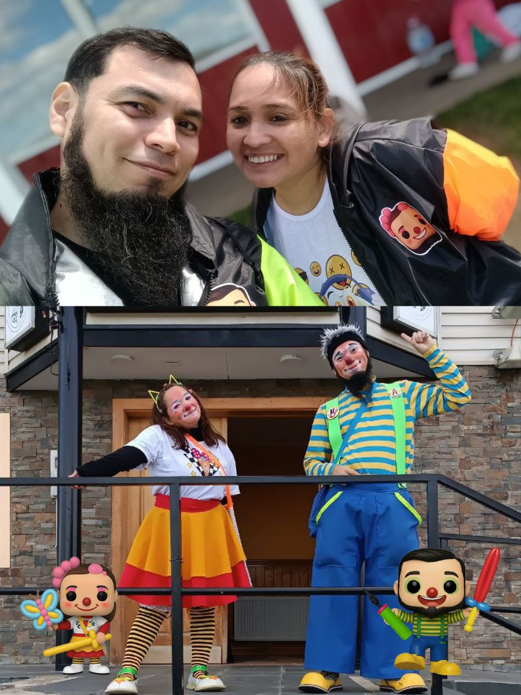
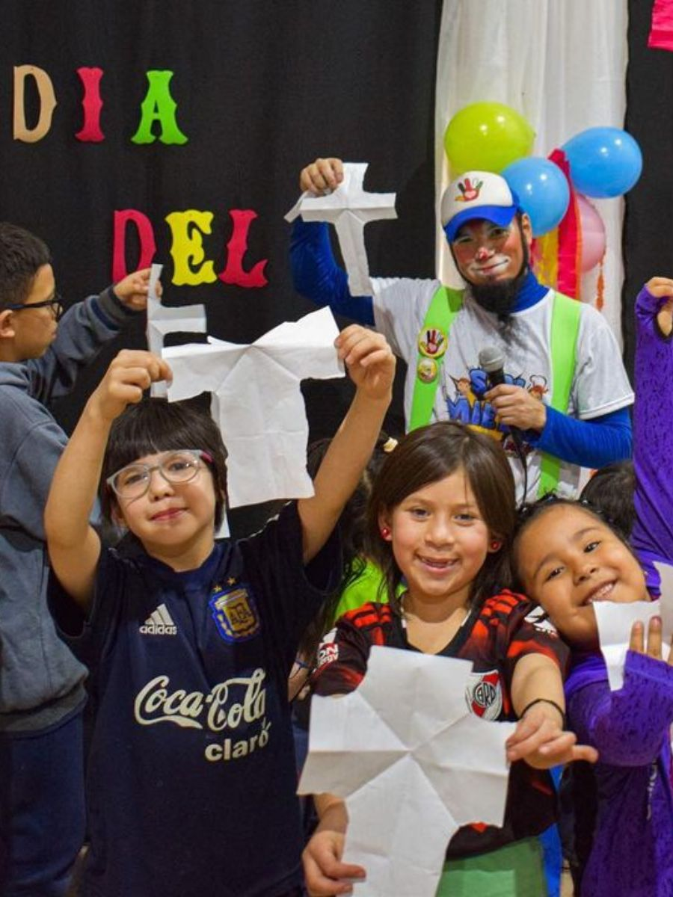
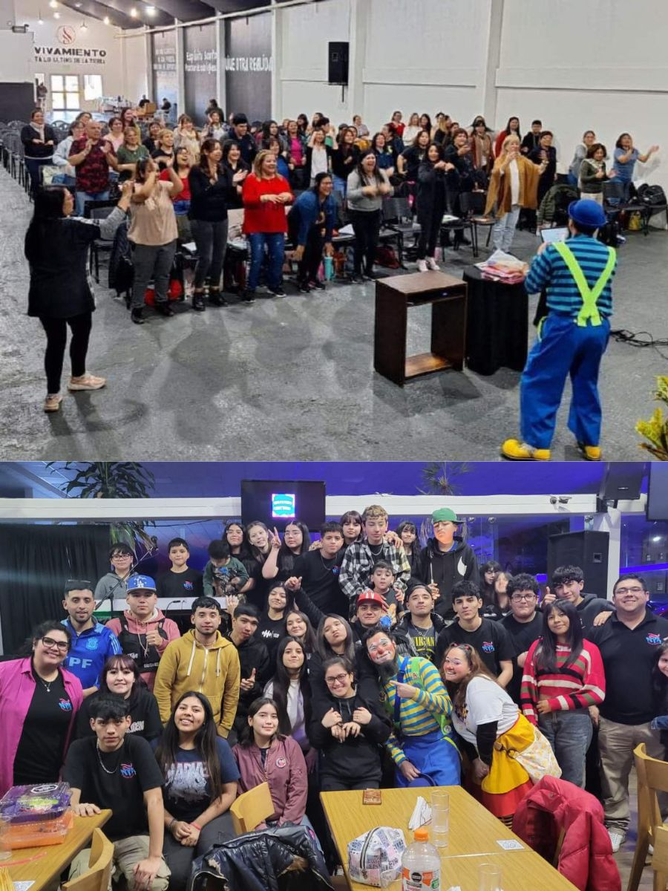
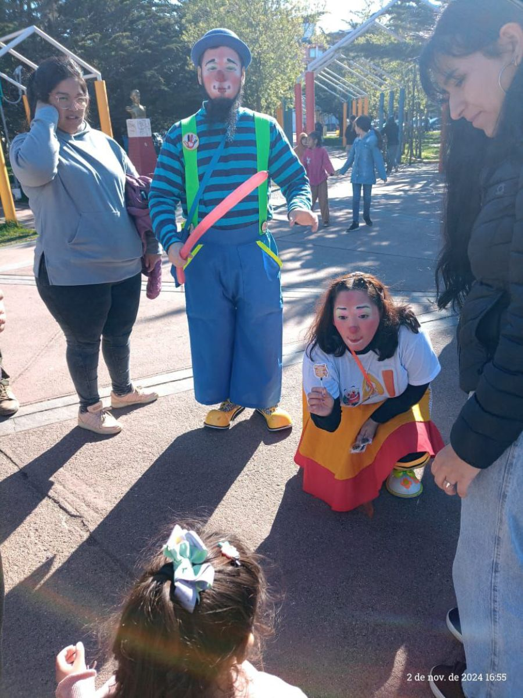
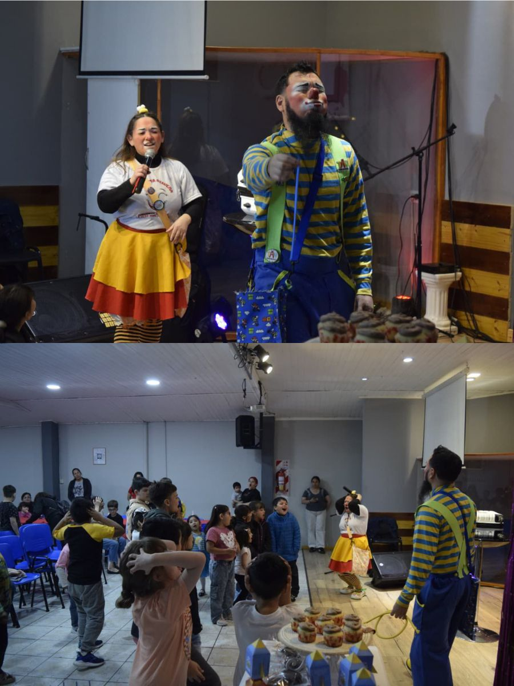
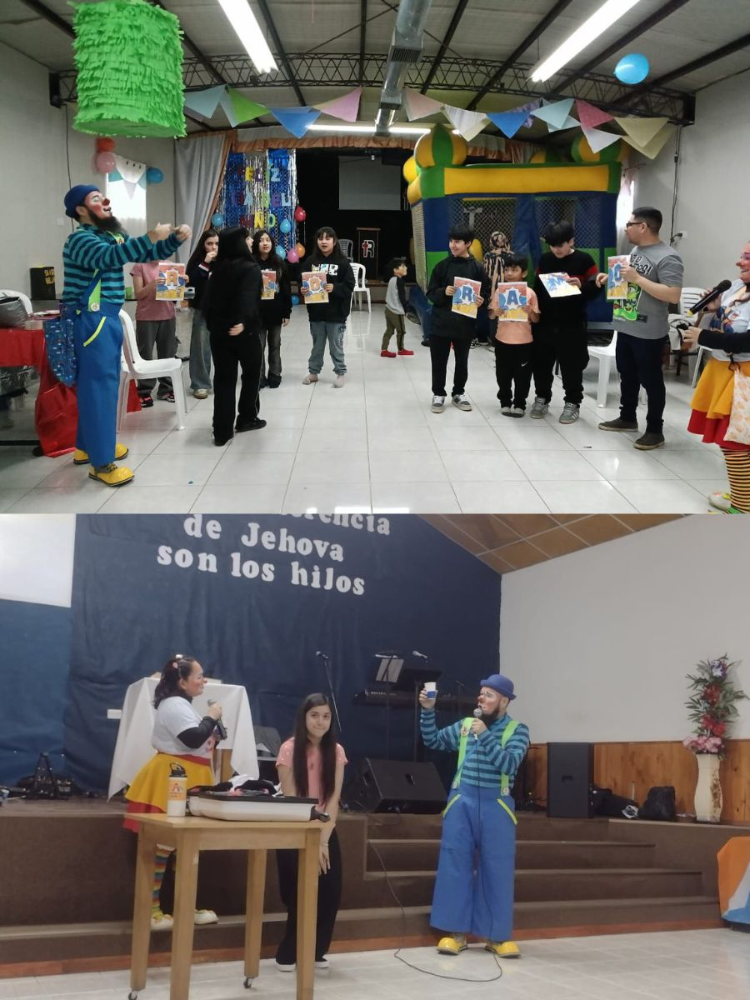

Somos Tan y Risueña. Usamos la herramienta del payaso como un medio para acercarnos a las personas, generar sonrisas y comunicar el mensaje de Jesús de una manera sencilla, sana y cercana.
Nuestra visión es acompañar a iglesias, familias, fundaciones y comunidades con propuestas que ayuden a compartir la Palabra de Dios de forma clara, alegre y participativa.
A través del humor sano, las historias, la música, la globoflexia, la tecnología y las dinámicas, buscamos crear puentes para que niños y familias puedan conocer el amor de Jesús.
Fotos de actividades, eventos, iglesias y espacios donde compartimos alegría, fe y esperanza.






Algunas actividades, clases y recursos compartidos por Tan y Risueña.
Presentaciones, eventos y momentos especiales compartiendo alegría y el mensaje de Jesús.
Espacios de formación, enseñanza y recursos para iglesias y familias.
Presentaciones cristianas, dinámicas, juegos, canciones, globoflexia y actividades familiares.
Sí, participamos en espacios solidarios y hospitales.
Sí, coordinamos eventos, escuelas bíblicas y actividades especiales.
La forma más rápida es por WhatsApp.
Espacio preparado para recursos descargables, talleres y materiales digitales.